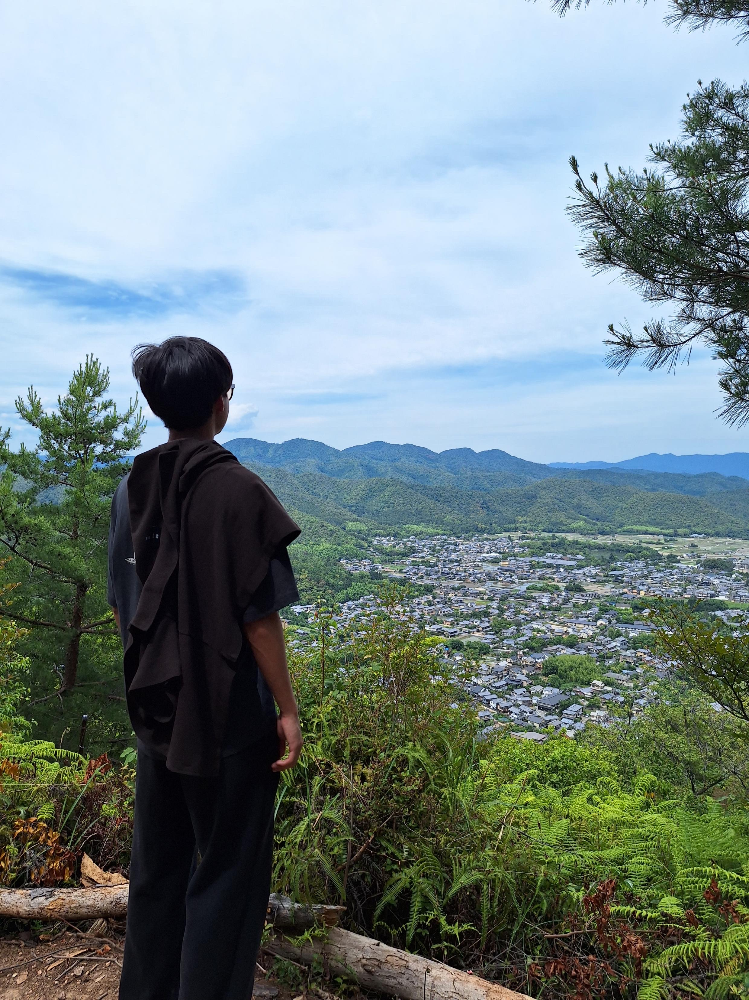

Selected work
Builds, field-tested systems, and one robot design in planning. Open any project for the full write-up, specs, and build log.
Leon Chen, Mechatronics Engineering at the University of Waterloo
Robotics, mechanical design, electronics, and software. Looking for a Winter 2027 co-op.
Explore by subsystem
Builds, field-tested systems, and one robot design in planning. Open any project for the full write-up, specs, and build log.
I’m a Mechatronics Engineering student at the University of Waterloo who enjoys turning ideas into things that can be tested and improved. Through FTC robotics, electronics projects, and CAD evaluation, I’ve worked across mechanical design, embedded systems, and software. I’m looking for a Winter 2027 co-op where I can keep building and learning as an engineer.
I coordinated a class of 8 mentors and 8 students at Learning Buddies Network and placed 2nd in SHAD Canada’s Sustainability Design Challenge.
Away from the workbench I play lead saxophone in jazz band, compete in badminton, snowboard, and volunteer with the BC Children’s Hospital club.
